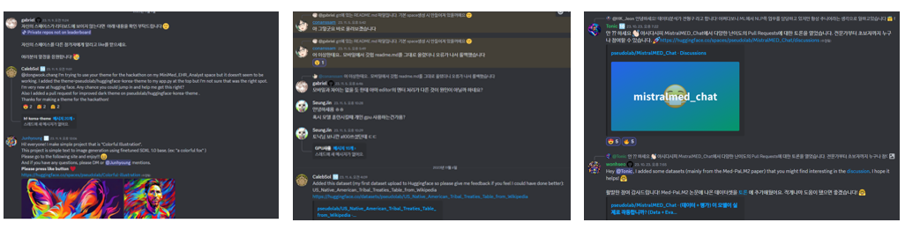
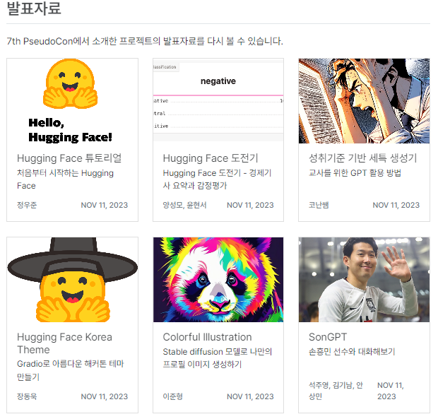

23년 허깅페이스 헤커톤 운영후기
2023년 허깅페이스 해커톤 운영 후기
인공지능에 관심 있는 분이라면 ’트랜스포머’와 ’허깅페이스’라는 용어를 들어보셨을 겁니다. 허깅페이스는 AI와 머신러닝에 쉽게 접근하고 활용할 수 있는 플랫폼입니다. 저희 허깅페이스 KREW팀은 이 플랫폼을 공부하는 사람들의 모임이며, 문서 번역을 시작으로 다양한 스터디 활동을 진행해왔습니다.
공식 문서를 번역하며 허깅페이스에 기여했고, 이를 계기로 ’2023 Everyday AI Hackathon’을 운영하게 되었습니다. 이 글에서는 대회 운영을 통해 느낀 점들을 나누고자 합니다.
쉽지 않은 대회 운영
이번 행사를 처음으로 운영하며 많은 도전이 있었습니다. 특히 헤커톤의 주제를 결정하는 과정이 어려웠습니다. 저희는 허깅페이스 KREW 번역 과정에서 느낀 서로를 응원하고 함께 목표를 달성하는 경험을 참가자들과 공유하고자 했습니다.
홈페이지 제작도 쉽지 않았지만, 원형님 덕분에 한글과 영문을 모두 지원하는 사이트를 구축할 수 있었습니다. 소현님의 귀여운 허깅페이스 이모티콘은 홈페이지 왼쪽을 멋지게 장식했습니다. 헤커톤 당일 준비된 스티커도 매우 예뻤습니다.
상대적 경쟁보다는 서로를 응원하는 경험을 제공하는 것이 중요하다고 생각했으며, 허깅페이스를 통해 더 많은 사람들이 AI를 일상에 적용할 수 있도록 돕고 싶었습니다.
다양한 국가의 참가자들과 협업하기
대회가 시작되면서 해외 참가자들의 관심도 높았습니다. 한국어와 영어로 진행된 프로젝트들은 다양했습니다. 한국 참가자들은 경제 기사 요약, 교육용 GPT 활용, 개인 이미지 생성 등의 데모를 제작했습니다.

허깅페이스 Discord 채널에서는 영어와 한국어로 다양한 논의가 진행되었습니다. 해외 참가자들의 주제가 매우 흥미로워 즐겁게 들었습니다.
오프라인 발표
2023년 허깅페이스 해커톤은 슈도랩과 함께 진행되었습니다. 오프라인 시작을 어떻게 할지 고민했지만, 우준님께서 허깅페이스에 대한 소개자료를 만들어 공유해주셨습니다.
깃헙과 허깅페이스 이모티콘과 함께 실제 코드로 설명해 주셨지만, 제가 잘 몰라서 혹은 글로 쓰기 귀찮아서 그런 것은 아닙니다….
대회를 통해 얻은 것
실제로 동작하는 데모를 만들며 배우는 경험이 가장 큰 장점이었습니다. 점진적으로 성장하는 과정의 중요성을 깨달았고, AI와 머신러닝을 실용적으로 활용하는 데 많은 도움이 되었습니다.
오프라인 발표에서 데모에 대한 관심이 높았으며, 발표자료를 원하는 요청이 많았습니다. 대회 후 발표자들의 허락을 받아 홈페이지에 자료를 업로드할 수 있었습니다.

사람들 앞에서 발표하는 것은 준비가 필요하고 긴장되지만, 매우 보람찬 경험입니다. 다음에는 더 많은 참가자들이 이런 경험을 할 수 있도록 돕고 싶습니다.
헤커톤 데모가 궁금하신가요?
헤커톤 발표자들의 자료는 대회 홈페이지에서 확인할 수 있습니다. 발표자료를 만들고 공유해준 모든 발표자분들께 감사드립니다. 대회에는 상금이 없었지만, 데모를 만드는 뿌듯함과 허깅페이스 수료증을 위해 많은 참가자와 발표자들이 노력했습니다. 홈페이지에서 자세한 내용을 확인해보세요.
여러분도 허깅페이스를 활용해 사용자 친화적인 AI 프로젝트를 만들어보세요. AI는 단지 기술적인 도구가 아니라, 실생활 속 문제 해결의 열쇠입니다. 이 흥미로운 여정에 여러분도 함께해보세요.